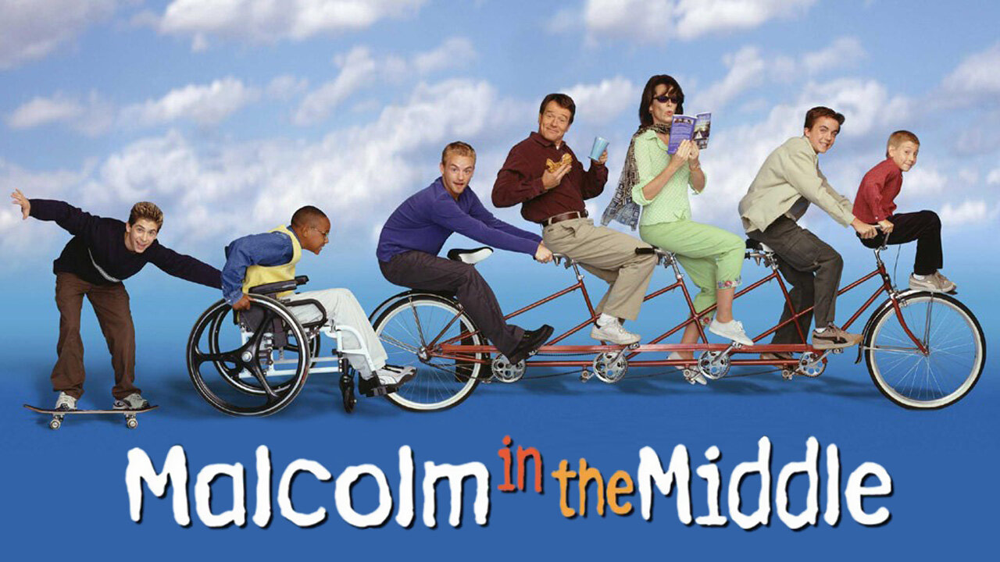
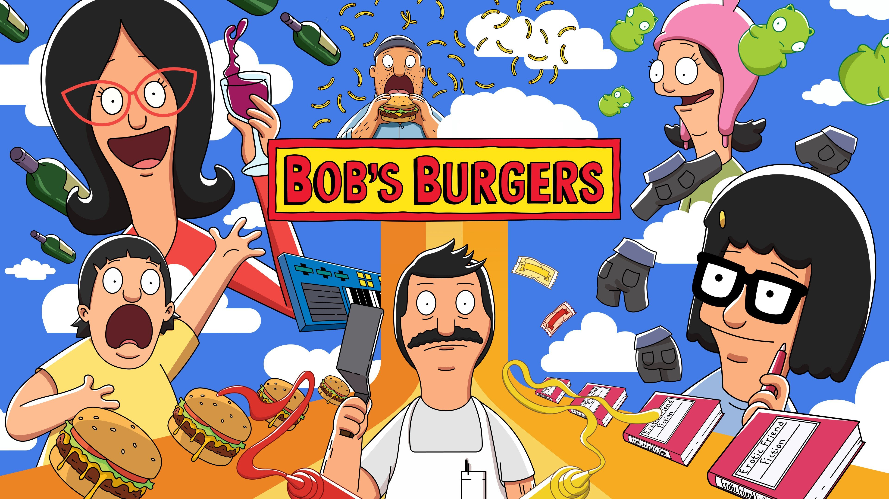

Easy wins
Most episodes are all clear — pick almost anything and relax.
 Kid-friendlier
Kid-friendlierBluey
152 of 152 episodes are all clear
100% all clear · 0% gray · 0% skip
See the safest episodes → Kid-friendlier
Kid-friendlierKPop Demon Hunters
1 of 1 episodes are all clear
100% all clear · 0% gray · 0% skip
See the safest episodes → Kid-friendlier
Kid-friendlierSpongeBob SquarePants
601 of 602 episodes are all clear
100% all clear · 0% gray · 0% skip
See the safest episodes → Kid-friendlier
Kid-friendlierPhineas and Ferb
247 of 249 episodes are all clear
99% all clear · 1% gray · 0% skip
See the safest episodes →- Kid-friendlier
Pokémon: Indigo League
78 of 79 episodes are all clear
99% all clear · 1% gray · 0% skip
See the safest episodes →  Kid-friendlier
Kid-friendlierSteven Universe
146 of 149 episodes are all clear
98% all clear · 2% gray · 0% skip
See the safest episodes → Kid-friendlier
Kid-friendlierAdventure Time
225 of 236 episodes are all clear
95% all clear · 5% gray · 0% skip
See the safest episodes → Kid-friendlier
Kid-friendlierFull House
112 of 119 episodes are all clear
94% all clear · 6% gray · 0% skip
See the safest episodes → Kid-friendlier
Kid-friendlierAmphibia
99 of 106 episodes are all clear
93% all clear · 7% gray · 0% skip
See the safest episodes → Kid-friendlier
Kid-friendlierStar Wars: The Clone Wars
120 of 133 episodes are all clear
90% all clear · 10% gray · 0% skip
See the safest episodes → Kid-friendlier
Kid-friendlierAvatar: The Last Airbender
50 of 61 episodes are all clear
82% all clear · 8% gray · 10% skip
See the safest episodes → Kid-friendlier
Kid-friendlierYoung Sheldon
111 of 140 episodes are all clear
79% all clear · 17% gray · 4% skip
See the safest episodes → Kid-friendlier
Kid-friendlierThe Fresh Prince of Bel-Air
115 of 148 episodes are all clear
78% all clear · 19% gray · 3% skip
See the safest episodes → Kid-friendlier
Kid-friendlierGravity Falls
31 of 40 episodes are all clear
78% all clear · 22% gray · 0% skip
See the safest episodes → Kid-friendlier
Kid-friendlierThe Owl House
31 of 43 episodes are all clear
72% all clear · 28% gray · 0% skip
See the safest episodes → Kid-friendlier
Kid-friendlierThe Legend of Korra
36 of 52 episodes are all clear
69% all clear · 27% gray · 4% skip
See the safest episodes →
Kid-friendlierMalcolm in the Middle
99 of 151 episodes are all clear
66% all clear · 30% gray · 4% skip
See the safest episodes → Kid-friendlier
Kid-friendlierThe Simpsons
303 of 564 episodes are all clear
54% all clear · 39% gray · 7% skip
See the safest episodes → Kid-friendlier
Kid-friendlierSeinfeld
94 of 176 episodes are all clear
53% all clear · 38% gray · 9% skip
See the safest episodes → Kid-friendlier
Kid-friendlierModern Family
129 of 246 episodes are all clear
52% all clear · 38% gray · 10% skip
See the safest episodes → Kid-friendlier
Kid-friendlierThe Big Bang Theory
141 of 277 episodes are all clear
51% all clear · 32% gray · 17% skip
See the safest episodes →
Depends on the episode
Some gentle ones, some spicy ones — check the list before play.

Preview firstBob's Burgers
136 of 309 episodes are all clear
44% all clear · 38% gray · 18% skip
See the safest episodes → Preview first
Preview firstParks and Recreation
46 of 122 episodes are all clear
38% all clear · 34% gray · 28% skip
See the safest episodes → Preview first
Preview firstThe Office
67 of 186 episodes are all clear
36% all clear · 38% gray · 26% skip
See the safest episodes → Preview first
Preview firstFriends
33 of 228 episodes are all clear
14% all clear · 57% gray · 29% skip
See the safest episodes → Preview first
Preview firstHow I Met Your Mother
29 of 208 episodes are all clear
14% all clear · 39% gray · 47% skip
See the safest episodes → Preview first
Preview firstFamily Guy
34 of 456 episodes are all clear
7% all clear · 27% gray · 66% skip
See the safest episodes → Preview first
Preview firstBrooklyn Nine-Nine
10 of 135 episodes are all clear
7% all clear · 51% gray · 42% skip
See the safest episodes → Preview first
Preview firstFuturama
No all-clear episodes — preview every one
0% all clear · 79% gray · 21% skip
See the safest episodes → Preview first
Preview firstWednesday
No all-clear episodes — preview every one
0% all clear · 94% gray · 6% skip
See the safest episodes →
Mostly not for little kids
A few episodes work; the rest are for after bedtime.
 Mostly skip
Mostly skipSouth Park
Only 6 of 334 episodes are all clear
2% all clear · 12% gray · 86% skip
See the safest episodes → Mostly skip
Mostly skipRick and Morty
No all-clear episodes — after-bedtime territory
0% all clear · 7% gray · 93% skip
See the safest episodes → Mostly skip
Mostly skipStranger Things
No all-clear episodes — after-bedtime territory
0% all clear · 15% gray · 85% skip
See the safest episodes →